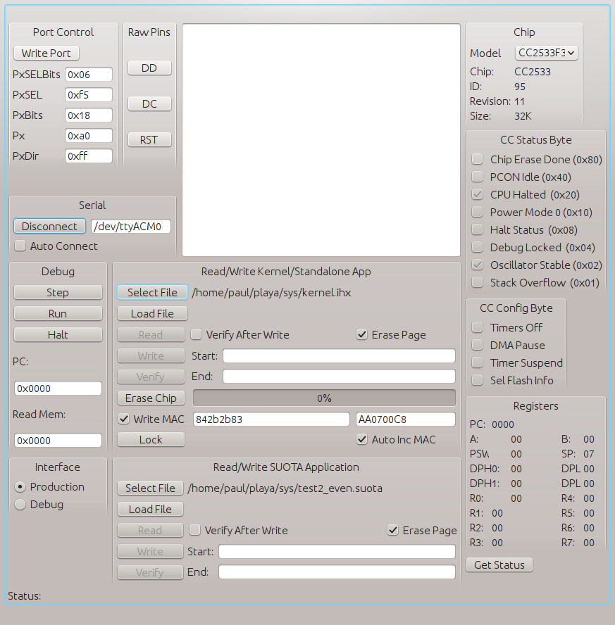
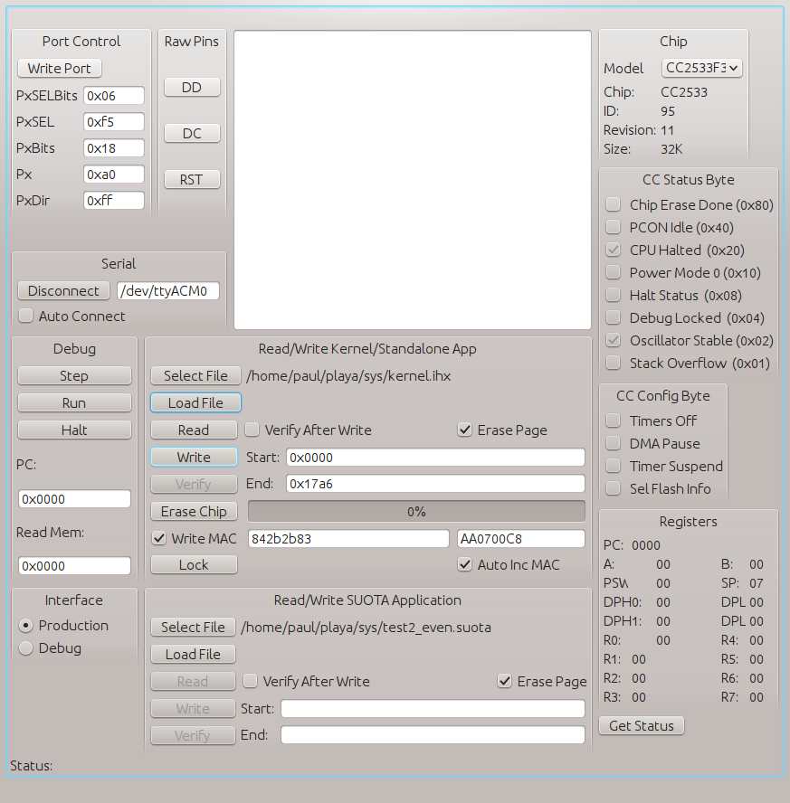
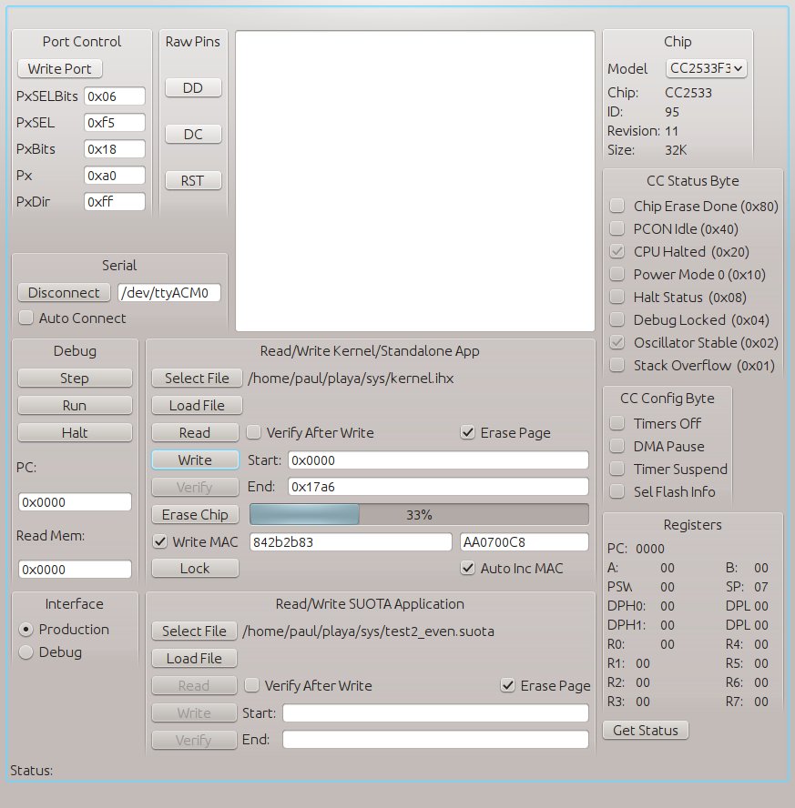

Here we try and walk you through loading a development system, compiling a simple kernel and SUOTA loaded application, loading and running them.
Here we assume you have in your posession two development boards and one programmer. We're going to build something like the following (but with one RF node). Then we're going to load an application into one of the nodes over RF, then upgrade it to a later version.
We use SDCC as a build system - we provide a copy of the source we build from under Linux at http://moonbaseotago.com/cheaprf/sdcc-2533.tar.gz. This version adds an extra machine specific include file for the cc2533 and some minor tweaks to enable use of the second data pointer register.
Our source is stored on GitHub at https://github.com/MoonbaseOtago/CC-System grab a copy and install the source tree on your system.
Edit the Makefile at the top level and change SDCC_INSTALL_DIR to point to wherever you installed your sdcc libraries during the previous step
We support two build models, either a kernel plus downloadable applications, or an integrated kernel and application - we'll build both types of application in this walk through
Generally you would choose to build an integrated application if you don't need software upgrade and/or you want to build a larger application. You might also build an integrated app while you are developing your kernel - once you've frozen it and deployed it to your various hardware nodes you switch to pushing your app in SUOTA form
At the top level of the source tree type "make kernel.ihx" - the system should build a default kernel.
This builds a kernel that uses a well known crypto key for SUOTA - it's not particularly secret - come back here and create your own secret key later by editing the SUOTA_KEY variable in the Makefile, and the contents of the file kernel/suota_key.c, then type "make clean;make"
You next need to download and build the GUI app for programming grab a copy from GitHub: https://github.com/MoonbaseOtago/CCLoad
Building this app needs C++ and the QT4 libraries.
Run the app from src/ccload, it's usefull to run it from a shell as it will log any characters a development board sends on its serial port
You should see something like:
Now attach an 6-pin programming cable to your programmer and plug the other end into the programming connector of the first development board, make sure that pin 1 on one board is wired to pin one of the other board.
Plug the board into your computer and determine which device it's attached to:
Type the name of the device you want to use into the "Serial" text box half way down the panel on the left hand side - the program will remember it next time. Press the "Connect" button, you should see the panel change to look like the following panel, if the name on the button doesn't change to 'Disconnect' it hasn't found the device, you may have typed the wrong device name.
Note the 'Connect' button has changed to 'Disconnect', the 'Chip' panel in the top right contains information about the chip found on the development board, the CC Status Byte tells you the development system's current state
Now's a good time to set up automatic MAC generation - check the "Write MAC" box, next to it are 2 text boxes put 8 hex digits into each box, check the "AutoincMAC" box, now every time you write a kernel it will get a unique MAC address assigned to the board. How should you find a unique MAC address to use - I steal one from an existing device that works in another domain: ethernet or wifi - put the first 8 hex digits of your laptop's ethernet mac address into the left hand box, and the last 4 hex digits, followed by "0000" into the right hand box.
Press the "Select File" button, it will pop up a file open dialog box, navigate to the place you built the kernel and choose the kernel.ihx file. The press the "load" button to load the kernel into the GUI program - it will look like:
Note that for a kernel the "Start:" is 0x0 and the "End:" is less than 0x2000 (the limit of the space we assign for kernels).
Next press "Erase Chip" to delete any already loaded applications and "Write" to copy the kernel image into the development board - normally we don't check "Verify After Write", it takes too long, only use it if you suspect a problem.
Build the serial standalone app in the sources directory by typing "make serial.ihx".
Press "Disconnect" on the programming app, or quit from it. Remove the development board you just programmed and set it aside. Plug in the second board. Start the app and "Connect".
Press "Select File" and navigate to the serial.ihx you just build. Press "Load" to load it into the GUI app, and "Write" to write it into the second development board this will be your serial gateway. Press "Run" and "Disconnect" the programming GUI.
Now you need to solve a problem - you need to power your serial gateway while you use it - you have 4 options:
WARNING: be carefull to not short the various power supplies here together - leave off the SV jumper if you use either of the serial connections AND either a programmer, or an xternal power supply. For similar reasons don't use the FTDI serial position and the programmer serial position at the same time.
Type "make packet_loader" to build the serial gateway app.
Windows/Mac users - if you ported this and have feedback/change you can push back would you please drop us a note.
Next run it passing the name of your serial interface - it will open the device and print a help message:
./packet_loader /dev/ttyACM0 a: autodump A: autodump, raw and promiscuous c: set rf channel 11-26 - c channel h: help i: initialise file m: set mac - m a:b:c:d:e:f:g K: load key (16 hex bytes) - K key-num value O: receiver on o: receiver off p: ping P: set promiscuous (snoops any packet) r: set raw - dumps all received pckets R: reset remote board s: send a broadcast packet - s * cmd count s: send a directed packet - s a:b:c:d:e:f:g cmd count !: send a broadcast crypto packet - ! key-num * cmd count !: send a directed crypto packet - ! key-num a:b:c:d:e:f:g cmd count U: rpt snd packet every N secs - U secs key-num arch code_base version u: suota update listener - u arch code_base version file q: quit >
Test connectivity with the 'p' command (ping), if everything's connected OK it will respond with:
PRINT: PING
We have a simple test app, you can build multiple SUOTA versions (2 through 5) of it with "make suota_test", that builds 4 different versions, each flashes the LED at a different rate
Find a power supply for that first board, the one you put the kernel in - 3V from a battery, a programmer, or an FTDI cable (as described above).
Load version 2 by entering the following command into the running packet_loader app to run a script that sets up the packet loader to advertise which code versions are available and which files contain the appropriate code
i suota_test/sload2
After a while the LED on the first broard should start flashing, the code has been loaded over the air from the serial gateway. Try pushing a newer version, enter:
i suota_test/sload3
This will trigger a new update, after a while the LED will start flashing a little slower
You can continue with versions 4 and 5. To reset the board and reload them again you need to load the kernel back into the board from the GUI, make sure to first do an "Erase Chip" to trash the apps